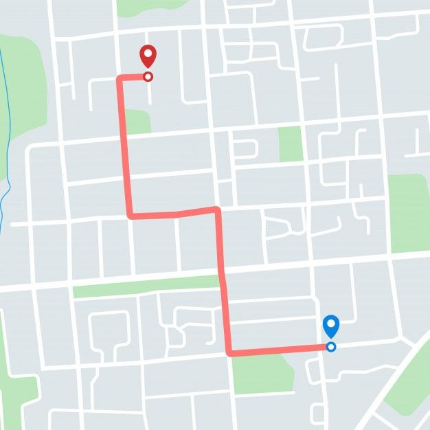

<ion-menu side="end" contentId="main-content">
  <ion-header>
    <ion-toolbar>
      <ion-title>Menu Content</ion-title>
    </ion-toolbar>
  </ion-header>
  <ion-content class="ion-padding">

    <ion-item href="#">
      <ion-label> Profils </ion-label>
    </ion-item>

    <ion-item >  
      <ion-button fill="clear" color="dark" (click)="removeData()">deconnexion</ion-button>
    </ion-item>

  </ion-content>
</ion-menu>
<div class="ion-page" id="main-content">
  <ion-header>
    <ion-toolbar>
      <ion-title>Menu</ion-title>
      <ion-buttons slot="end">
        <ion-menu-button></ion-menu-button>
      </ion-buttons>
    </ion-toolbar>
  </ion-header>
  <ion-content class="ion-padding"> Tap the button in the toolbar to open the menu. </ion-content>
</div>

<ion-header>
  <ion-toolbar>
    <ion-buttons slot="end" >
      <ion-menu-button color="dark"></ion-menu-button>
    </ion-buttons>
  </ion-toolbar>
</ion-header>

<ion-content class="background" fullscreen>
  <!-- <div class="madiv">
   
  </div> -->
  
<ion-tabs>
  <ion-card class="ion-no-margin">
    <!--  -->
  
    <ion-card class="ion-no-margin">
      <ion-card-header>
        <ion-card-subtitle>
          <ion-icon name="location-outline"></ion-icon>
           4,23 mi <ion-icon name="time-outline"></ion-icon> 20 min  
        </ion-card-subtitle>
        <ion-card-title> 
          Coffe tek
        </ion-card-title>
       
      </ion-card-header>
    
      <ion-card-content>
        <ion-button class="btn" shape="round" fill="solid" expand="block" routerLink="/tabs/tab5" (click)="getdata()"> View Menu</ion-button> 

        <ion-card-title> 
          Adresse
        </ion-card-title>

        <ion-card-subtitle>
           N°43 sacre coeur 3
           dakar, senegal 
        </ion-card-subtitle>
      </ion-card-content>
    </ion-card>
  </ion-card>  
</ion-tabs>
  
 
</ion-content>
